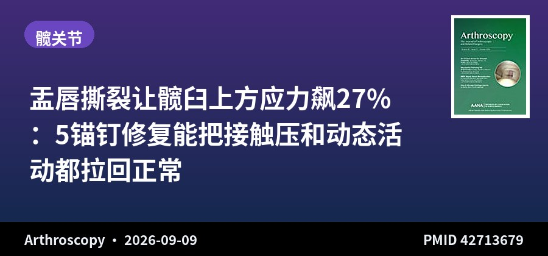
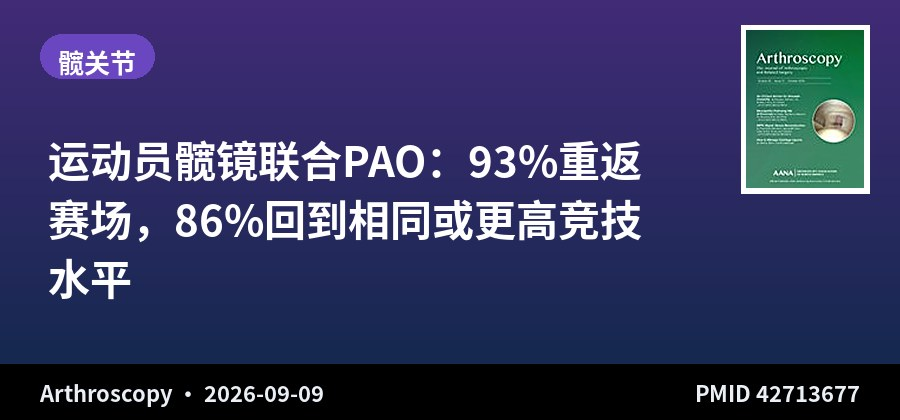
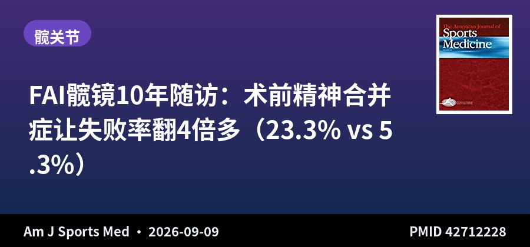
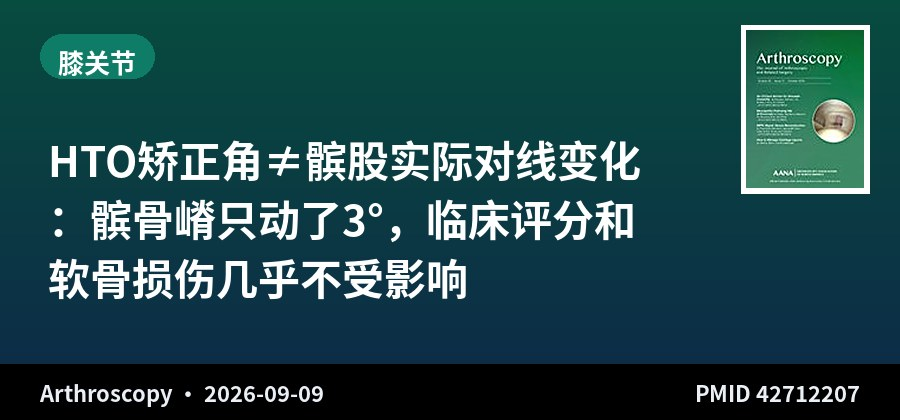
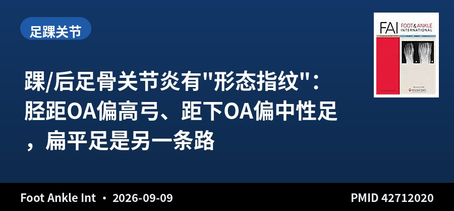

SPORTS MEDICINE & ARTHROSCOPY DIGEST
运动医学 · 关节镜文献速览
第 005 期 · 2026-09-10
昨日（9月9日）10 本核心期刊新收录 6 篇 · 本期精选 5 篇
按关节分类：髋 3 · 膝 1 · 足踝 1
编者按 EDITOR'S NOTE
今天 6 篇里髋关节占了 3 篇，而且恰好是三个完全不同的维度：尸体力学、临床重返、心理因素。加上足踝那篇用统计形状模型做三维分型、膝那篇把"矫正角"和"实际对线"掰开看——这批文献的共同气质，是"把老问题看得更细、更立体"。
三篇髋各有价值：盂唇修复的尸体研究给了"该不该修"的力学答案（撕裂把应力集中到上方软骨易损区，修复能重新铺开）；髋镜联合 PAO 的 44 例给了"该不该做"的结局答案（93% 重返、86% 回原级别）；而 NYU 的 10 年随访提醒我们——决定 FAI 髋镜成败的，可能还有术前那张"心理处方"：精神合并症让失败率从 5.3% 翻到 23.3%。
足踝和膝那两篇，本质都在纠正同一个误区：别用"某一个角度"代表"整个关节的对线"。HTO 把下肢矫正了 9.3°，髌股关节实际只动了 3°；踝 OA 的不同亚型，背后是截然不同的足型（高弓 vs 中性）。给临床的启示很朴素：评估要立体、要整体，别让一个数字替你做决策。
▍髋关节 · 3 篇

尸体生物力学 · 8髋
盂唇撕裂让髋臼上方应力飙27%：5锚钉修复能把接触压和动态活动都拉回正常
Repair of Labral Tears in a Cadaveric Model Normalizes Acetabular Contact Pressure Distribution and Restores Dynamic Hip Motion
Arthroscopy · 2026-09-09 · 芝加哥大学/威斯康星 · PMID 42713679
一句话结论：尸体模型显示盂唇撕裂使上方峰值接触应力增加 27%、总接触面积减少 21%；5 枚锚钉修复后应力降低 45%、接触面积恢复到完整的 10% 以内，动态外展活动恢复到完整的 98%。
要点：8 例新鲜冰冻尸体髋，250N 轴向加载 + Tekscan 测接触压；撕裂（11-2 点）→ 上方峰值应力 +27%、上方接触面积占比 42%→53%；修复后 → 上方应力较完整降 45%、面积占比回到 46%；撕裂使相对外展减少 20%（0.96° vs 1.20°），修复后恢复到 1.17°。
对临床的启示：为"盂唇到底该不该修"提供了直接力学证据——撕裂把应力集中到上方（软骨易损区），修复能把应力重新铺开、并恢复动态髋活动。对镜下修复指征是正面背书：不是"缝上好看"，是力学上真的有意义。

回顾队列 · 44例 · 平均48个月
运动员髋镜联合PAO：93%重返赛场，86%回到相同或更高竞技水平
High Rate of Return to Sport in Competitive Athletes Undergoing Periacetabular Osteotomy With Concomitant Hip Arthroscopy
Arthroscopy · 2026-09-09 · 休斯敦大学健康中心 · PMID 42713677
一句话结论：44 例竞技运动员（52 髋）髋镜联合 PAO，总体 RTS 率 93.1%，其中 80.5% 回到术前水平、12.2% 升到更高水平、7.3% 降到更低水平；平均随访 47.8 个月。
要点：2016-2023 年单术者；44 例（37 女 7 男）52 髋，8 例双侧；覆盖高中/俱乐部/大学/职业各级别；41 例（93.18%）RTS，33 例（80.49%）回术前水平、5 例（12.19%）升更高、3 例（7.32%）降更低；88.63% 有 ≥2 年随访，3 例并发症需再次手术。
对临床的启示：对"发育不良的运动员要不要做 PAO"这个决策，这份数据很有说服力：髋镜+PAO 联合不仅能回到赛场，86% 还能回到原级别甚至更高。对年轻、有竞技诉求的发育不良患者，是重要的预期管理依据。

回顾队列 · 243例 · ≥10年
FAI髋镜10年随访：术前精神合并症让失败率翻4倍多（23.3% vs 5.3%）
Psychiatric Comorbidity Is Associated With Increased Failure Rates and Inferior Clinical Outcomes After Hip Arthroscopy for Femoroacetabular Impingement Syndrome at a Minimum 10-Year Follow-up
Am J Sports Med · 2026-09-09 · NYU Langone · PMID 42712228
一句话结论：243 例 FAI 髋镜 ≥10 年随访，术前有精神合并症者失败率 23.3%（无者 5.3%），失败前生存时间更短（11.49 vs 13.68 年）；焦虑、抑郁、焦虑+抑郁均独立增加失败风险（均 P≤.002）。
要点：30% 有精神合并症、21% 用精神类药物；失败=翻修髋镜或转 THA；多因素校正后焦虑/抑郁/焦虑+抑郁/合并用药均独立关联失败；两组 PROM 都改善，但精神合并症组改善幅度更小、术后评分更低。
对临床的启示：髋镜结局研究里越来越被重视的一块：心理状态不是"软指标"，它直接关联 10 年失败率和功能恢复。术前筛查焦虑/抑郁、必要时转介，可能比纠结手术技巧更能改善长期结局——尤其对 FAIS 这种"症状与结构常不匹配"的疾病。
▍膝关节 · 1 篇

回顾队列 · 45膝
HTO矫正角≠髌股实际对线变化：髌骨嵴只动了3°，临床评分和软骨损伤几乎不受影响
Coronal Alignment Changes in the Patellofemoral Joint Are Smaller Than Correction Angle and Have Little Impact on Clinical Scores and Cartilage Damage After Medial Open-Wedge High Tibial Osteotomy
Arthroscopy · 2026-09-09 · 京都大学 · PMID 42712207
一句话结论：内侧开放楔形 HTO 平均冠状矫正 9.3°，但髌股关节对线指标变化显著更小（髌骨嵴仅 3.0° vs 股四头肌 6.8°），且这些对线变化与临床评分、髌骨软骨损伤的相关性都很弱。
要点：45 膝（39 例），术前术后全腿 CT；冠状矫正角均值 9.3°；髌骨嵴角度变化（3.0°）显著小于股四头肌（6.8°）；仅 KOOS-ADL 随髌腱角度增大而下降（r=-0.333）；>70% 患者 KOOS 改善超 MCID；髌骨软骨 ICRS 分级术后略恶化（P=.004）但与对线变化无相关。
对临床的启示：很多人担心 HTO 大矫正会"破坏"髌股关节——这份数据显示：冠状面上的髌股对线变化远小于矫正角，且对临床结局影响甚微。可缓解"矫正大了怕伤髌股"的顾虑，但注意髌骨软骨分级术后确有轻微恶化，长期仍需随访。
▍足踝关节 · 1 篇

回顾队列 · 196例 WBCT
踝/后足骨关节炎有"形态指纹"：胫距OA偏高弓、距下OA偏中性足，扁平足是另一条路
Three-Dimensional Osseous Alignment and Morphology Patterns of Ankle and Hindfoot Osteoarthritis
Foot Ankle Int · 2026-09-09 · 犹他大学 · PMID 42712020
一句话结论：196 例负重 CT + 14 骨统计形状模型显示：胫距 OA（TTOA）最接近高弓/内翻后足，距下 OA（STOA）最接近中性足，胫距+距下联合 OA（TTSTOA）跨度最广（内翻+外翻都有）；扁平足组与所有 OA 组都显著不同。
要点：196 例 WBCT（130 OA + 66 对照，分扁平/中性/高弓）；PCA 主成分1=高弓-扁平谱，主成分3=关节间隙变窄；TTOA 偏内翻后足+高矢状弓；STOA 偏中性足型；TTSTOA 两关节间隙都低、内翻外翻混合；扁平足与所有 OA 组均差异显著。
对临床的启示：把踝和后足 OA 从"单个关节病"提升到"整体对线环境"的视角：不同类型的 OA 有不同足型背景（胫距偏高弓、距下偏中性）。评估 OA 别只看关节本身，要看整个足的对线；也解释了为什么同样的"踝 OA"，病因和进展路径完全不同。
关于本栏目：每日定时检索 AJSM、Arthroscopy、Arthroscopy Techniques、KSSTA、Sports Health、OJSM、J ISAKOS、Sports Medicine、Foot & Ankle International、JSES 共 10 本运动医学核心期刊前一日新收录文献，按关节分类，AI 辅助生成中文精要。
声明：本内容由 AI 辅助整理，仅供学术交流参考，观点与数据请以原文为准，不构成诊疗建议。文献题录与摘要来源：PubMed。
— 运动医学 · 关节镜文献速览 · 第 005 期 —